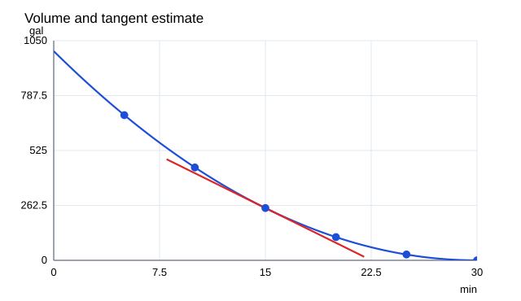

문제 요약
1000 gallon 탱크가30분에 비워진다. (t분,V gallon) 표=[(5, 694), (10, 444), (15, 250), (20, 111), (25, 28), (30, 0)]에서 P=(15,250).(a)t=5,10,20,25,30의 할선 기울기,(b)가까운 두 할선 평균으로 접선 기울기,(c)그래프에서15분 유출률을 추정하라.

힌트. 할선 기울기 Δy/Δx를 계산하고 기준점으로 다가갈 때의 값을 비교한다.
해설.
\[m_{PQ}=\frac{V(t)-250}{t-15}\]
5 → -44.4000; 10 → -38.8000; 20 → -27.8000; 25 → -22.2000; 30 → -16.6667
가장 가까운 양쪽 시각10,20의 기울기를 평균하면(−38.8−27.8)/2=−33.3 gallon/min이다.
최종 답. (a)−44.4,−38.8,−27.8,−22.2,−16.6667 gallon/min.(b,c)약−33.3 gallon/min; 물이 나가는 양의 속률은 약33.3 gallon/min.
검산·주의점. 음의 기울기는 남아 있는 물의 감소를 뜻한다. 그림의 매끄러운 보조곡선1000(1−t/30)²는 표를0.45 gallon 이내로 근사하며 실제 정확한 법칙으로 가정하지 않는다.
Problem summary
A1000-gallon tank empties in30 minutes. Using(t in min,V in gal)=[(5, 694), (10, 444), (15, 250), (20, 111), (25, 28), (30, 0)] and P=(15,250),find(a)secant slopes at t=5,10,20,25,30,(b)a tangent estimate by averaging two nearby secants,(c)a graphical flow-rate estimate at15 minutes.
Hint. Compute the secant slope Δy/Δx and compare values as the second point approaches the base point.
Solution.
\[m_{PQ}=\frac{V(t)-250}{t-15}\]
5 → -44.4000; 10 → -38.8000; 20 → -27.8000; 25 → -22.2000; 30 → -16.6667
Average the nearest slopes at10 and20:(−38.8−27.8)/2=−33.3 gal/min.
Final answer. (a)−44.4,−38.8,−27.8,−22.2,−16.6667 gal/min.(b,c)Approximately−33.3 gal/min;the positive outflow rate is about33.3 gal/min.
Check and conditions. The negative slope means remaining volume decreases. The smooth plotting guide1000(1−t/30)² approximates the table within0.45 gal and is not asserted as an exact law.